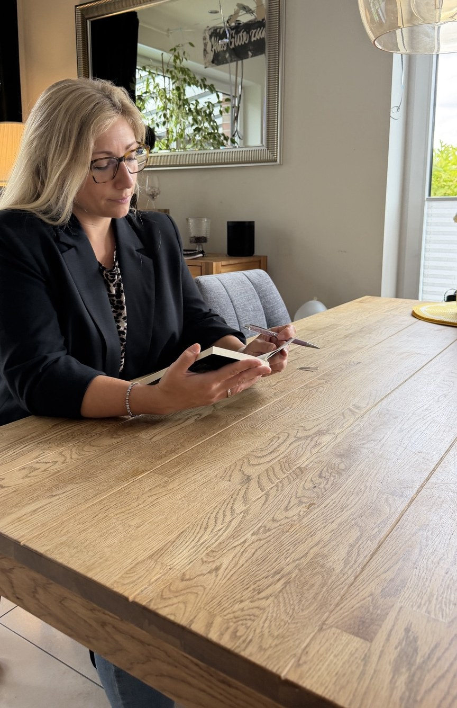

01
Für dich
Wenn Gedanken kreisen, Entscheidungen schwerfallen, du Grenzen sortieren oder wieder klarer sehen möchtest.
Es muss nicht erst alles zu viel werden. Wenn Gedanken kreisen, Gespräche festhängen oder du einfach wieder klarer sehen möchtest, darf ein Gespräch der erste Schritt sein.
Reden. Sortieren. Weiterkommen.
Du musst noch nicht genau wissen, was du sagen möchtest. Eine kurze Nachricht reicht.
Vielleicht läuft eigentlich vieles ganz gut – und trotzdem beschäftigt dich etwas. Genau dafür darf Beratung da sein: ohne Bewertung und ohne dass aus einem Problem erst ein großes Problem werden muss.
Wenn Gedanken kreisen, Entscheidungen schwerfallen, du Grenzen sortieren oder wieder klarer sehen möchtest.
Wenn Gespräche schwierig geworden sind, Nähe fehlt oder ihr euch immer wieder an denselben Punkten begegnet.
Wenn Alltag, Erziehung, Veränderungen oder unterschiedliche Bedürfnisse das Miteinander belasten.
… du nicht nach schnellen Ratschlägen suchst, sondern deine Situation sortieren und einen Weg finden möchtest, der wirklich zu dir passt.

Ich lebe in Borken/Gemen und kenne den ganz normalen Alltag zwischen Familie, Beruf, Verantwortung, Erwartungen und den vielen Dingen, die gleichzeitig ihren Platz brauchen.
Vielleicht ist mir gerade deshalb wichtig, Beratung nicht künstlich oder distanziert zu machen. Du musst bei mir nicht funktionieren und auch nicht begründen, warum ein Thema „schlimm genug“ ist.
„Wir schauen gemeinsam darauf, was dich beschäftigt, was bereits trägt und welcher nächste Schritt tatsächlich zu deinem Leben passt.“
Systemische Beratung betrachtet Menschen nicht isoliert. Familie, Partnerschaft, Arbeit, Erfahrungen und Beziehungen wirken zusammen.
Meine Aufgabe ist nicht, dir zu sagen, wie du leben sollst. Ich höre zu, stelle Fragen, mache Muster sichtbar und suche mit dir nach Möglichkeiten, die für dich funktionieren.
Kein langer Anmeldeprozess. Erst einmal Kontakt aufnehmen und schauen, ob es passt.
WhatsApp, Telefon, E-Mail oder Instagram. Ein Satz reicht völlig.
15–30 Minuten kostenfrei und unverbindlich. Wir klären, worum es geht und ob die Zusammenarbeit für dich passt.
Wenn es passt, vereinbaren wir weitere Gespräche – persönlich in Borken/Gemen, online oder an einem passenden Ort nach Absprache.
Du musst keine lange Nachricht formulieren. Zum Beispiel reicht: „Hallo Sabrina, ich würde dich gerne unverbindlich kennenlernen.“
Ich melde mich persönlich zurück.